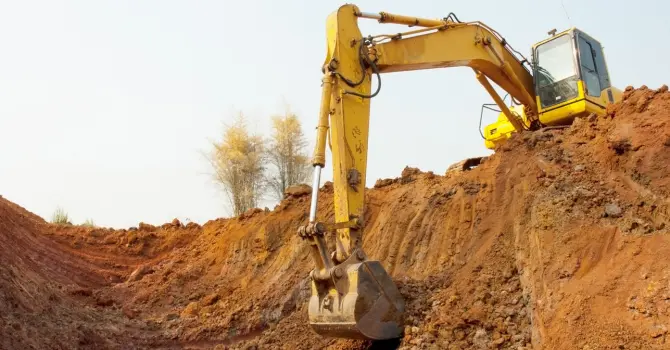
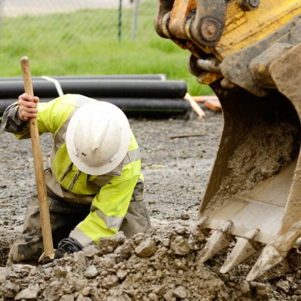
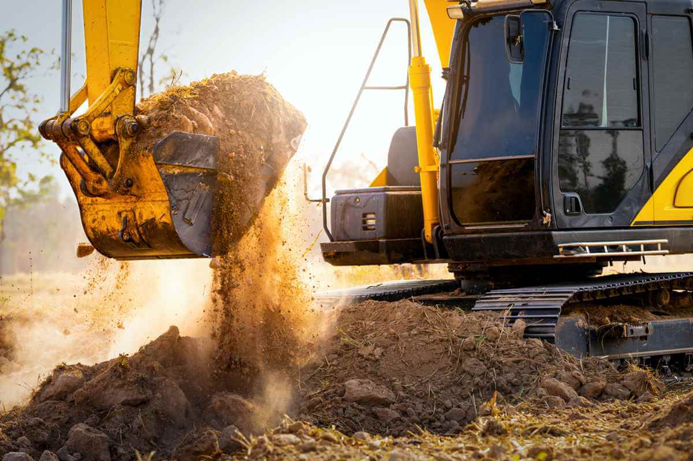

Výkopové práce
Realizujeme komplexné výkopové práce pre rôzne typy stavieb a infraštruktúrnych projektov. Naše služby zahŕňajú výkopy základov, inžinierskych sietí a terénne úpravy s použitím modernej techniky.
Disponujeme skúseným tímom a technikou pre presné výkopové práce, zabezpečujeme bezpečnosť práce a dodržiavame všetky technické normy a predpisy.


